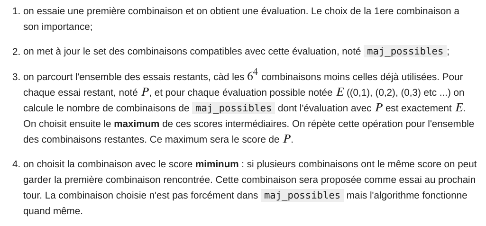

Stage
greg mc
June 2022
3D
geometry
- Pythagoras
- Théorème de Bolyai
- Heron’s formula
Pythagore
Si un triangle est rectangle, le carré de la longueur de l’hypoténuse est égal à la somme des carrés des longueurs des deux autres côtés.
\(a^2 = b^2 + c^2\)
- aire d’un triangle
- aire d’un triangle rectangle \(\frac12 (b\times c)\)
- decoupage d’un triangle rectangle
Théorème de Bolyai
Deux polygones A et B de même aire sont équivalents par découpage et recollement.
On dit que deux polygones A et B sont par découpage et recollement si on peut decomposer
- A comme une réunion finie de polygones \(A_i\)
- B comme une réunion finie de polygones \(B_i\)
- tels que pour tout \(i\), \(A_i\) soit directement isométrique à \(B_i\).
- On note alors \(A \sim B\) .
Théorème de Bolyai
Deux polygones A et B de même aire sont équivalents par découpage et recollement.
- \(\forall\) triangle \(T\) \(\exists\) rectangle \(R\) avec \(T\sim R\)
- \(\forall\) \(R_1, R_2\) de meme aire \(R_1 \sim R_2\)
- Comment faire le cas general ?
Arithmetic
- Fibonacci
- Fermat
Games
- Mastermind
- Wordle
- Conway
algorithms


Enumeration
- 6 colours
- \(6^4 = 1296\)
- 6 colours \(\leftrightarrow\) digits \(0,1,2\ldots 6\)
- possibilities \(\leftrightarrow\) digits \(0,1,2\ldots 1296\)
def number_base(n, base):
if n == 0:
return 0
else:
return n % base + 10 * number_base(n // base, base)
Wordle
Fibonacci
- \(F_0 = 0, F_1 = 1\)
- \(F_{n+1} = F_n + F_{n-1}\)
Python
def Fibonacci(n):
if n == 0:
return 0
elif n == 1:
return 1
else:
return Fibonacci(n-1) + Fibonacci(n-2)DNN/AI
Python
fib = [1,1]
for _ in range(20):
fib.append(fib[-1] + fib[-2])
print(fib)
[1, 1, 2, 3, 5, 8, 13, 21, 34, 55,
89, 144, 233, 377, 610, 987, 1597,
2584, 4181, 6765, 10946, 17711]Odd index Fibonacci numbers
fib[1::2]
[1, 2, 5, 13, 34, 89, 233, 610, 1597, 4181, 10946]$- \(2 = 1^2 + 1^2\)
- \(5 = 1^2 + 2^2\)
- \(13 = 2^2 + 3^2\)
- \(34 = 3^2 + 5^2\)
[x**2 + y**2 for x,y in zip(fib[0:11], fib[1:]) ]
[1, 2, 5, 13, 34, 89, 233, 610, 1597, 4181, 10946]Odd index Fibonacci numbers
\[F_{2n+1} = F_{n+1}^2 + F_n^2\]